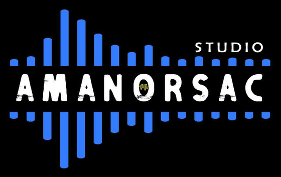

—
Presets
Looper
Idle
—
Output
LimiterIn
Out
Board
—Chord
Key
—
You
—
Played
Import a song or a video
MP3, WAV, M4A, FLAC, MP4, MOV — or a stem
0:00 / 0:00
Speed
100%
Zoom
Separating
Listening…
Audio
—Library
Footswitches
MIDI CCMIDI mappings
About

Low End
Bass amp, pedalboard, looper and music tutor.
No licence key is needed for this build.
Help
- Presets, songs and scenes
- A preset is a whole rig. A song is an ordered list of presets; each entry is a scene you step through on stage.
- Board
- Tap a pedal, the amp or the cab to edit it. Tap Input, Output or Settings for the rig's input, DI, output and synth.
- Knobs
- Drag up or down. Double-click, long-press or right-click for Reset and MIDI Learn.
- Learn
- Import a song, a video or a stem: Low End writes the chords, the key and the notes it hears. Tap the roll to jump; A and B set a loop. Detection runs on imported files, not on YouTube.
- Keyboard
- Space tap tempo · T tuner · L loop · ← → scenes · 1–8 jump to a scene